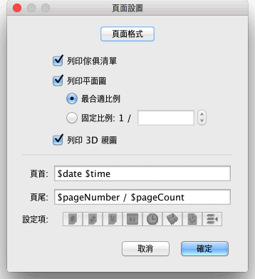

| 列印家居模型 | |||
如果您要列印當前的家居模型，請在功能表上選擇檔案→列印。 預設情況下，Sweet Home 3D 列印的內容為當前家居模型的傢俱清單、平面圖和當前顯示在 3D 視圖中的內容，並使用預設的紙張大小、頁邊距和方向。如果您想要更改這些參數，請使用檔→頁面設置... 功能表項目。  在頁面設置視窗中，您可以按一下頁面格式按鈕修改頁面的大小和方向。您也可以設置是否列印家居模型的傢俱清單、平面圖和 3D 視圖中的內容。如果您不想使用軟體自動計算出的最適合紙張大小的比例進行平面圖的列印，請在“固定比例”中指定您想要的數值。
為防止逐鍵輸入變數名的過程中發生錯誤，請使用頁眉和頁腳輸入框下麵的變數按鈕輸入變數。由於半形的“$”字元被保留作了變數名的識別字，故如果您想在列印時直接輸出一個“$”，請輸入“$$”（兩個半形“$”）。 列印家居模型之前，您可以使用功能表上的檔→預覽列印... 在螢幕上預覽您的頁面設置。
您可以在“預覽列印”視窗中逐頁預覽家居模型列印的效果。如要切換預覽的頁面，請按一下頂部的箭頭或按鍵盤上的方向鍵。 |

|